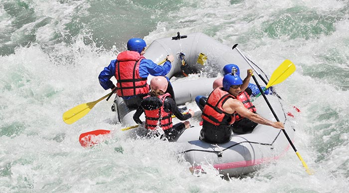

ACTIVITIES!



Images from left to right.
- The The Thrill of Bungy Jumping in Nepal Bungy jumping is taking the world by storm, particularly after having recently found additional venues within the highest mountain peaks in the world - the Himalaya mountain range. It’s a crazy sport that has some of the best views imaginable, if you don’t mind heights and being upside down. It has to be said that the Nepal bungy jump experience, with the longest free-fall to date, is nothing like you could imagine at 160 meters over the untamed waters of the Bhote Koshi. It is about a three hour drive from Kathmandu, the capital city of Nepal, to begin your adrenalin pumping adventure. At the moment there is only one bungy jumping agency operating in Nepal, known as ‘The Last Resort’. This agency hosts some of the most experienced jumpmasters in the field of bungy jumping. The jump they offer was designed by one of the leading consultants in New Zealand and abides by the strict international standards, thus guaranteeing the utmost safety from beginning to end. The bungy jump in Nepal takes place from a 166 meter steel suspension bridge that is Swiss designed and made specifically for bungy jumping, with a safety factor of x4 and a loading factor of 4.5t or 41,500kg. Interestingly, before the bridge was constructed, surrounding villagers would have to walk for about 5 hours in order to cross the river gorge safely.
- Elephant Safaris - An Amazing Adventure Awaits You in Nepal Elephant Safaris are an experience you don’t want to miss! You will be amazed at how much more you can see in the jungle from the back of an elephant. So come for the adventure of a lifetime on the back of an elephant in Nepal. The plains of southern Nepal are home to an amazing variety of plants and tropical trees. You will also be enthralled by the stunning views of the mountains in the north of Nepal, an area covered by a large amount of Sal Forest with a balanced mixture of grassland, savannah and riverine forest. What perfect surroundings to view Nepal's wildlife by riding on the back of an elephant for a great safari. Nepal offers many exciting Elephant Safaris in its National Parks and wildlife reserves. Some of the National Parks in Nepal are world famous for their wonderful wildlife. The Royal Bardiya National Park is an ideal place to spot a Bengal tiger, one-horned rhino, sloth bear, langur monkeys, wild boar, numerous species of deer, leopard and other jungle cats. Elephant Safaris in Nepal are a fantastic way to explore the jungle and offer the possibility of close-up views of wildlife in their natural habitat. Whilst on these safaris, visitors can enjoy other activities such as bird watching, jungle walks and boat rides. There are trained guides that will accompany you on your journey
- Spectacular Hot Air Ballooning in Nepal There are many ways to see the beautifully diverse Nepal, but nothing quite compares with a hot air balloon ride - it’ll be an hour that you will never forget. One such example is the hot air balloon sunrise ride. It is truly breathtaking as you gaze 360 degrees around upon the most magical scenery. It all begins as you gently rise over historical temples, roofed houses tiled in red, lonely stupas and fields painted in colors from nature's palette. Then suddenly your eye catches sight of the majestic range of the Himalayan mountains, capturing some of the most rugged beauties such as Langtang Himal and the greatest of them all Mount Everest, snow capped and bathing in the gentle rays of the early morning sun. During your gentle ascent you will float to about 1200 to 1500 meters, which will bring you close to the 3,000 meter mark made by many adventurous mountaineers. Perched in an enchanting wicker basket you will leisurely move above the well-known Kathmandu Valley rolling beneath you. An interesting fact about hot air ballooning is that it is one of the oldest methods of air travel in the world and considered the safest of them all to date.
- Water Sports Water sports in Nepal are an absolute highlight for all those who would love to have an unforgettable adventure of a life time while vacationing in Nepal. All over the world travelers are welcome to come and enjoy the excitement and exhilarating feeling of all kinds of water sports in Nepal. There are a many white waters and fine rivers in Nepal, which offer excellent opportunities for water sports, and of course there is something for everyone. Rafting, canoeing and fishing are all very popular in Nepal. Imagine gliding along calm, sparkling waters surrounded by magnificent scenery, or rush through roaring white water rapids - whatever your preferences are, Nepal caters. Rafting in Nepal provides you with the chance to view the beautiful countryside while enjoying the sights of traditional Nepali houses sitting on the hillsides and slopes. Rafting is truly spectacular in Nepal with lush tropical gorges that will give you the roller-coaster ride of your life. The rivers in the upper Himalayas are among the best in the world for river rafting sports, with many staircase rapids that challenge the body and spirit of anyone. Tourists can also enjoy overnight trips and packages where you can camp on sandy river banks.
People who have earned points for visiting these Landmarks:
| First Name | Last Name | Points |
|---|---|---|
| Jill | Smith | 50 |
| Eve | Jackson | 94 |
| Adam | Johnson | 67 |